[NEURAL TRANSMISSION LINK ESTABLISHED]
Architected by Team CreITers | Sector: Industrial DePIN.
"Welcome to the era of 2026. We are the architects of a sovereign industrial reality. Today, factories and plants are enslaved by the corporate coldness of centralized cloud platforms that pump out industrial data and sell it back at exorbitant prices. We have created the counterweight: we don't just write code; we give industrial networks a soul."
01 // Synaptic Foundations & Synergy
Synaptic Mesh Protocols
Every line of code is a neural pathway connecting PLC controllers and collaborative robots through a local WebRTC mesh. A local WebRTC DataChannel (P2P Mesh Network) guarantees that the information flow never leaves the plant perimeter[span_5](start_span)[span_5](end_span).
Human-Robot Synergy & AI Cognition
Operators directly interface with KUKA and UR cobots locally via WebMCP. This prevents intervention lag, eliminates external cloud dependency, and drastically improves real-time safety, allowing humans and machines to collaboratively execute kinematic tasks with deterministic precision[span_6](start_span)[span_6](end_span).
02 // Pipeline Lifecycle
03 // Ghost in Architecture
Zero-Trust Perimeter
Local POSIX execution isolations via WASI ensure that hostile binary compromises do not propagate to the field bus[span_7](start_span)[span_7](end_span).
Air-Gapped Telemetry
Data streams are retained locally in persistent temporal indexed stores with cryptographically proven offline integrity[span_8](start_span)[span_8](end_span).
04 // Protocols & WASI
| Protocol | Physical Target | WASI & PWA Implementation |
|---|---|---|
| Modbus TCP | PLCs, holding registers (0x03), cobot drives | Deterministic WASI POSIX socket polling (<2ms) |
| WebRTC Mesh | Air-gapped factory subnet peering | P2P DataChannels, zero WAN egress |
| IndexedDB NoSQL | Temporal telemetry storage | Browser transactional engine with indices |
Rust WASI Driver Interface
Live Driver Code Sandbox
STATUS: READY05 // Telemetry Verification Visualizers
06 // Solana DePIN Settlement
| Architecture Metric | SSHAnet Local DePIN | Legacy Cloud Monolith |
|---|---|---|
| Perimeter Settlement Cost | ~$0.0005 / 1k readings | $0.08 / request + Bandwidth Egress |
| Air-Gap Resiliency | Fully Autonomous Local P2P | Zero Offline Continuity |
| Identity Root | Hardware Ed25519 cNFTs | Vendor OAuth IAM Lock-in |